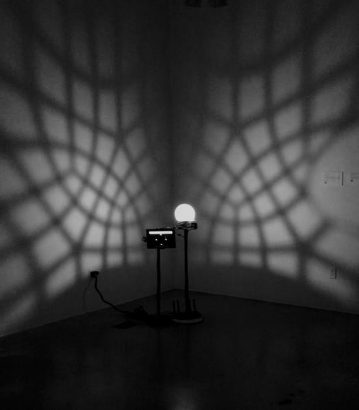
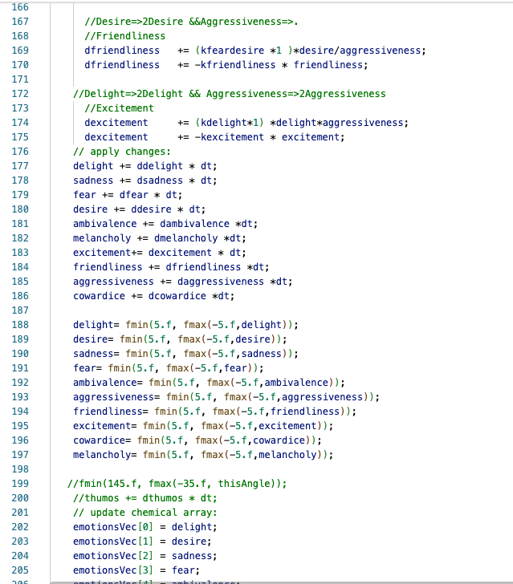
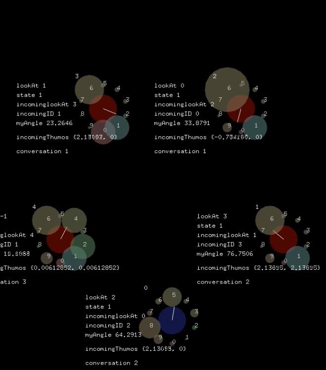
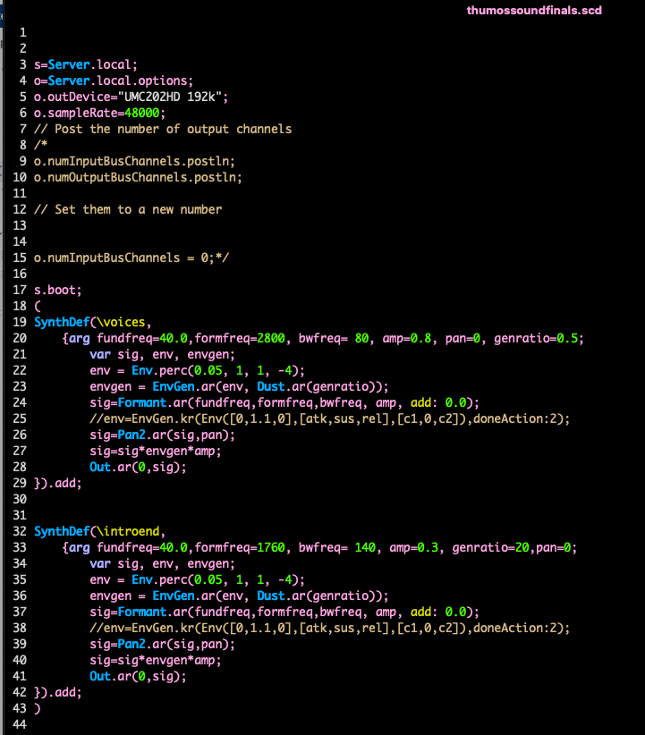
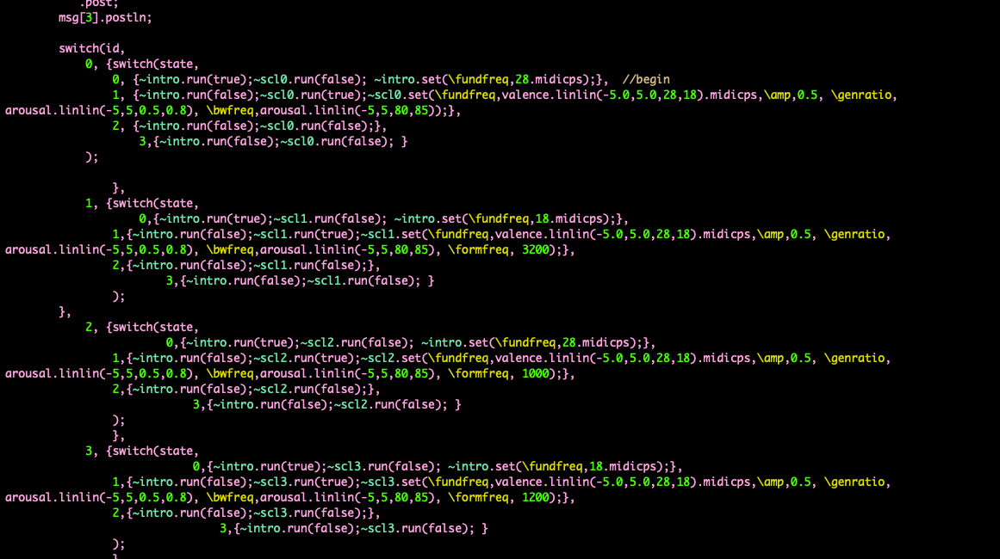

Synthetic emotion + visual music · 2022
Thumos
01 / Project
A multi-agent simulation of artificial emotion is materialized as moving shadow, mechanical motion, light, and sound.
Thumos is my Master’s thesis research-creation project exploring the computational synthesis of artificial emotions through simulation, kinetic sculpture, light, and spatial sound.
The work models artificial chemistries in which emotional states emerge through interactions between synthetic valence and arousal.
- Role
- Concept, simulation, software, electronics, sculpture, light, and sound
- Tools
- openFrameworks, SuperCollider, Raspberry Pi, custom electronics
- Exhibitions
- Sensoria and Nuit Blanche, 2022





From state to behavior
Simulation becomes computation; computation becomes physical behavior.
The kinetic sculpture translates computational behavior through parametrized moving shadows, stepper motors, light, and synthesized sound.
The work creates a space for attunement between human and artificial modes of sensing, asking how synthetic emotional processes can acquire perceptible and embodied form.